Глава 4 Управление выполнением и векторизованные вычисления
Данный модуль посвящен введению в работу с управлением выполнением команд в R, а также методами их пакетного выполнения в виде векторизованных вычислений. Мы рассмотрим такие полезные конструкции как циклы, условия, функции, функции семейства apply. Вместе они представляют собой мощное средство для организации сложных технологических схем обработки данных, требующих повторения идентичных операций над каждым элементом множества входных данных, ветвления алгоритма в зависимости от значений переменных, а также структурирования программного кода на автономные блоки команд, выполняющие специфичный набор операций.
Мы рассмотрим управление командами на примере построения графиков.
4.1 Циклы
Цикл — это разновидность управляющей конструкции, предназначенная для организации многократного исполнения набора инструкций. В R циклы наиболее часто используются для пакетной обработки данных, ввода и вывода. Типичными примерами использования циклов являются чтение множества файлов входных данных, а также построение серий графиков и карт одного типа по различным данным. При этом обработка множества строк таблиц в R обычно организуется не средствами циклов, а средствами функций семейства lapply, о которых мы поговорим отдельно.
В R, как и во многих других языках программирования, существует несколько вариантов циклов. Первый вид циклов — это конструкция for с синтаксисом for (x in X) statement. Она означает, что:
- переменная
xдолжна пробежать по всем элементам последовательностиX. В качестве последовательности может выступать любой вектор или список. - каждый раз, когда
xбудет присвоено значение очередного элемента изX, будет выполнено выражениеstatement, которое называют телом цикла. Соответственно, цикл выполнится столько раз, сколько элементов содержится в последовательностиX.
Выполнение тела цикла на каждом проходе называют итерацией.
Например, с помощью цикла можно вывести на экран числа от 1 до 10, по одному с каждой строки:
## ЦИКЛЫ
for (i in 1:10) print(i)
## [1] 1
## [1] 2
## [1] 3
## [1] 4
## [1] 5
## [1] 6
## [1] 7
## [1] 8
## [1] 9
## [1] 10Если тело цикла содержит более одной инструкции R, оно должно быть заключено в фигурные скобки, иначе выполнится только первое выражение, а оставшиеся будут запущены один раз после выхода из цикла:
for (i in 1:10) {
a <- factorial(i) # факториал i
b <- exp(i) # e в степени i
print(a/b) # факториал растет быстрее экспоненты
}
## [1] 0.3678794
## [1] 0.2706706
## [1] 0.2987224
## [1] 0.4395753
## [1] 0.8085536
## [1] 1.784702
## [1] 4.595885
## [1] 13.52585
## [1] 44.78295
## [1] 164.7473Другой вариант цикла организуется с помощью конструкции while, имеющей синтаксис while (condition) statement. Такая конструкция означает, что тело цикла будет выполняться, пока значение выражения condition (условия) равно TRUE. Как правило, в теле цикла обновляется некоторая переменная, которая участвует в проверке условия, и предполагается, что рано или поздно оно станет равным FALSE, что приведет к выходу из цикла. Например, вышеприведенный цикл, печатающий числа от 1 до 10, можно переписать на while следуюшим образом:
i <- 0
while(i < 10) {
i <- i+1
print(i)
}
## [1] 1
## [1] 2
## [1] 3
## [1] 4
## [1] 5
## [1] 6
## [1] 7
## [1] 8
## [1] 9
## [1] 10Обратите внимание на то, что мы внутри цикла обновляем значение переменной i.
Увеличение значения переменной цикла называется инкрементом, а уменьшение — декрементом
Одной из самых распространенных ошибок программистов (особенно начинающих, но и професионалы ее не избегают) является забытая инструкция инкремента (или деккремента) переменной цикла, в результате чего цикл становится бесконечным. В этом плане конструкция for более надежна.
Перейдем теперь от искусственных примеров к реальной практике. В качестве исходных данных используем знакомую нам таблицу Росстата по доходам и расходам граждан:
library(openxlsx)
# Чтение данных
tab <- read.xlsx("IncomeConsumption.xlsx", 1)
filter <- grep("федеральный округ", tab$Регион)
okr <- tab[filter, ]
names <- sub("федеральный округ", "", okr$Регион)
filter<-grepl("федеральный округ|Федерация|числе", tab$Регион)
sub <- tab[!filter, ]Например, посмотрим как можно построить столбчатые диаграммы по каждому столбцу таблицы okr:
# Пакетное рисование графиков
for(var in colnames(okr)[-1]) {
par(mar = c(5,9,4,2))
barplot(okr[,var],
names.arg = names,
horiz = TRUE,
las = 1,
main = var,
col = "steelblue")
}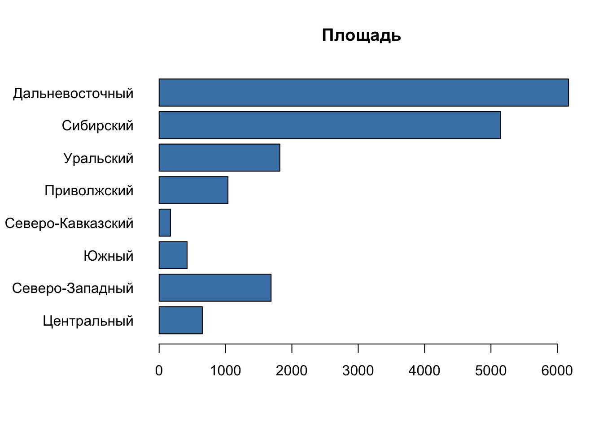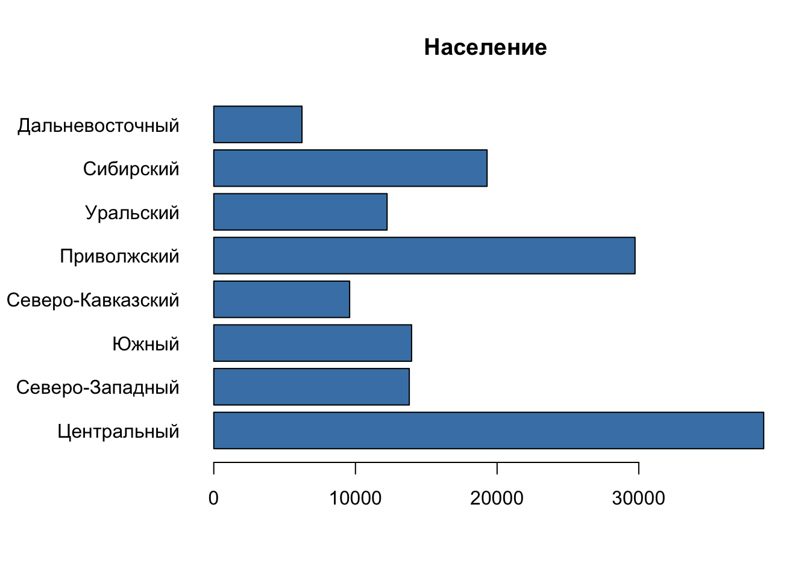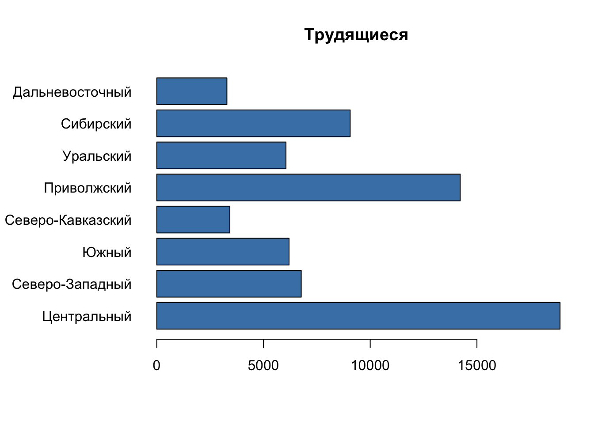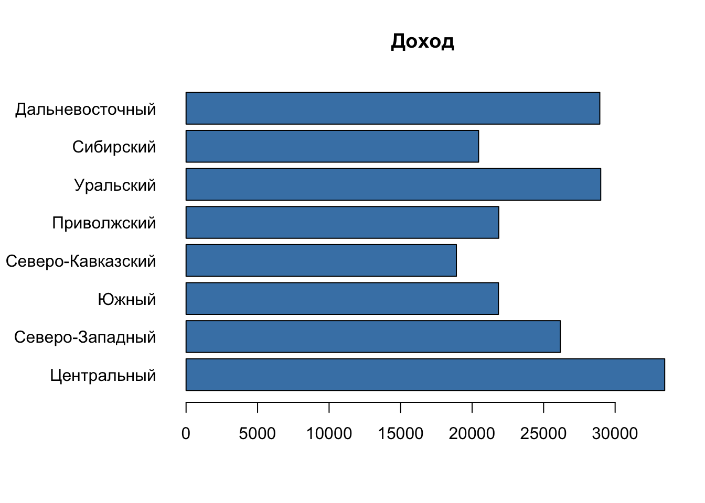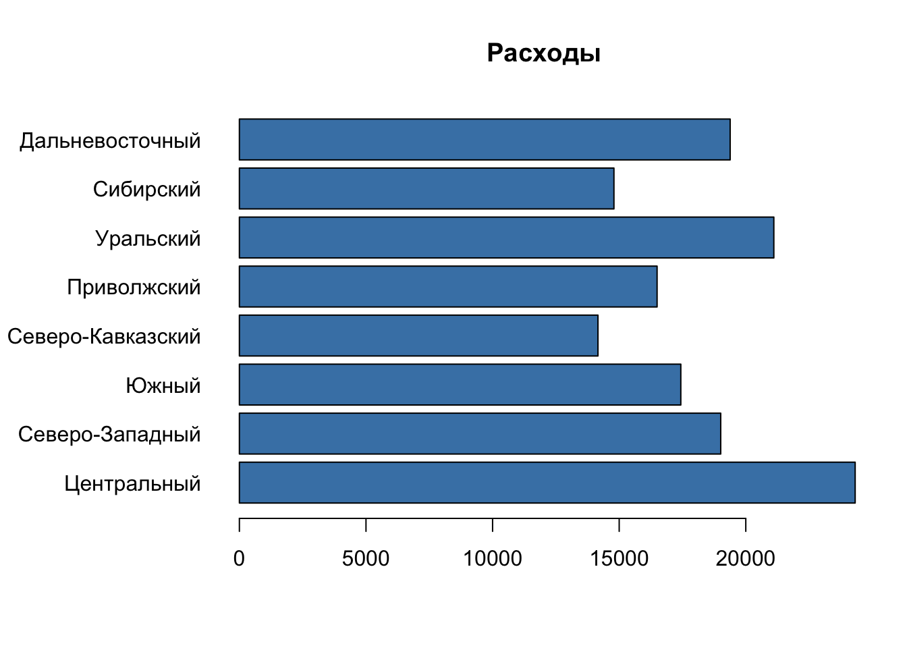


А теперь усложним тело цикла, добавив рисование гистограммы распределения по тому же показателю, но взятому из таблицы sub:
# Пакетное рисование графиков
par(mfrow = c(1,2))
options(scipen = 999) # запрещаем использовать экспоненциальную форму записи больших чисел
for(var in colnames(okr)[-1]) {
par(mar = c(5,9,4,3)) # устанавливаем поля для столбчатой диаграммы
barplot(okr[,var],
names.arg = names,
horiz = TRUE,
las = 1,
main = var,
xlab = "По федеральным округам",
col = "steelblue")
par(mar = c(5,3,4,1)) # устанавливаем поля для гистограммы
hist(sub[,var], breaks = 12, col="green", main = var, xlab = "По субъектам")
}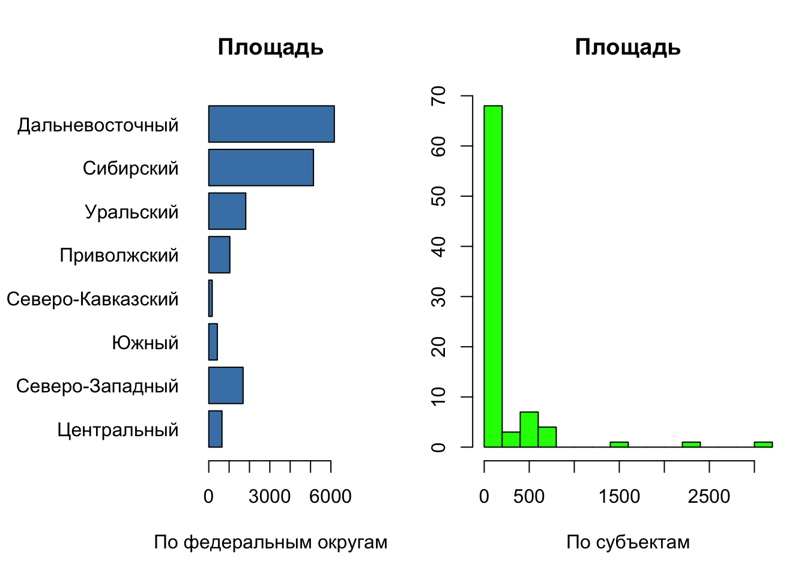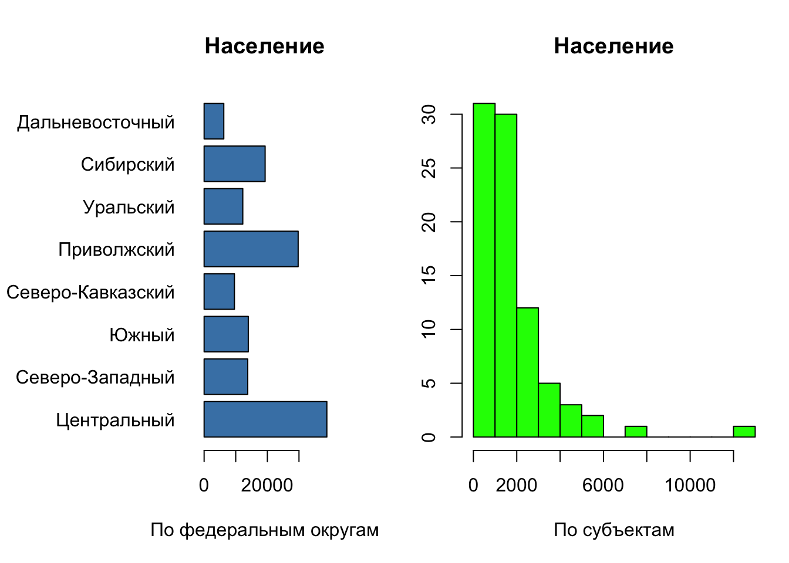 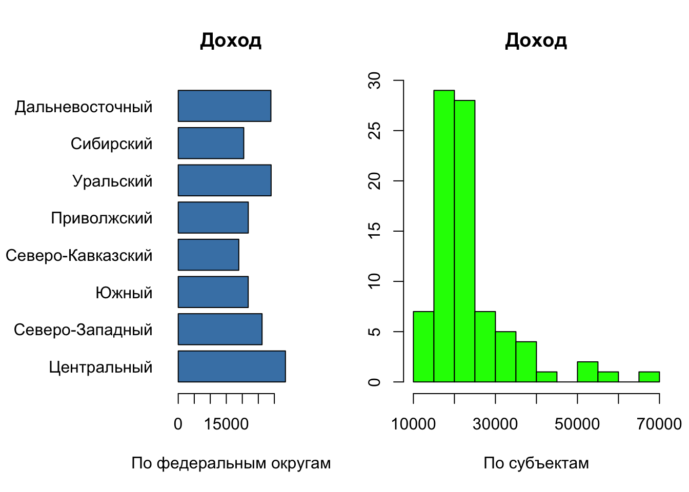
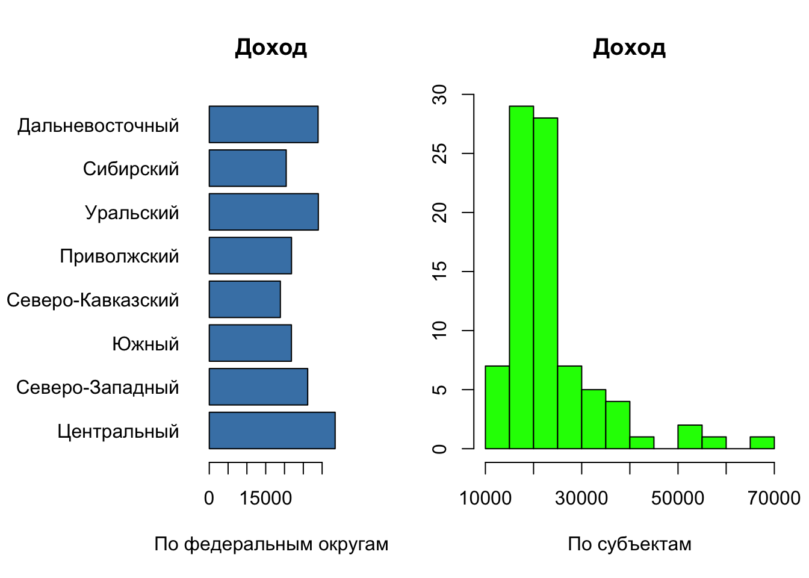 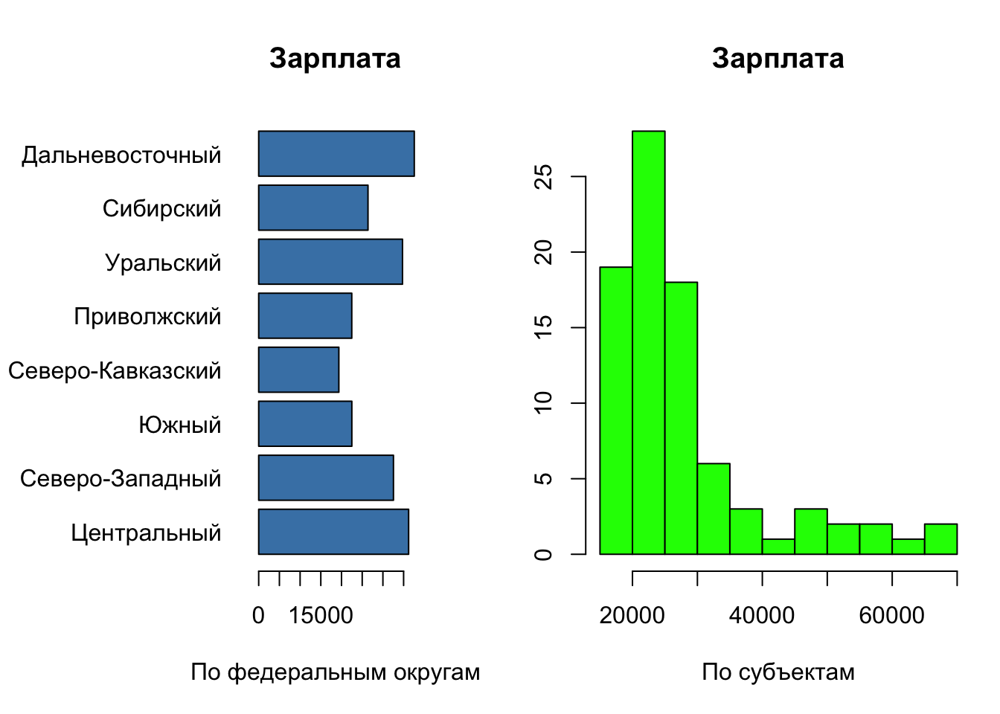
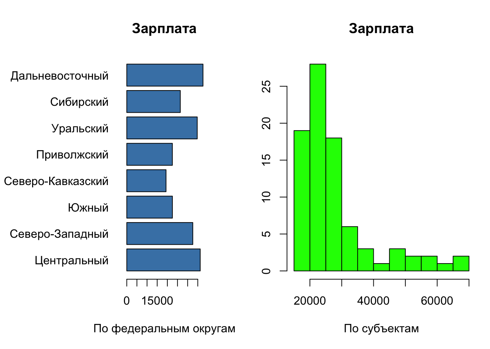 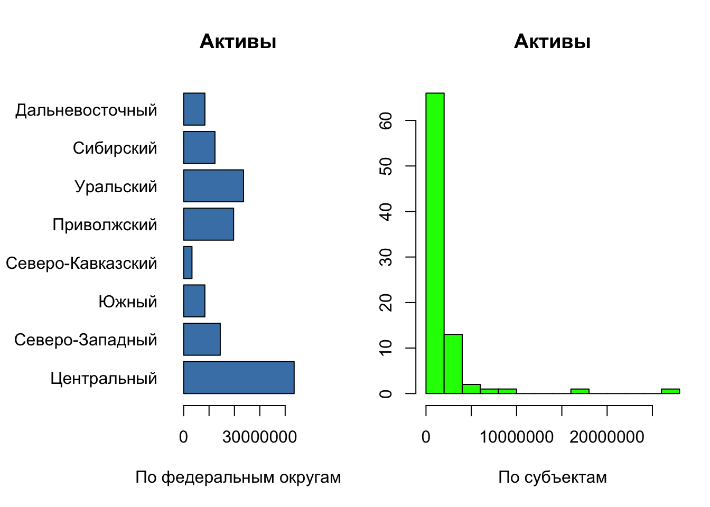
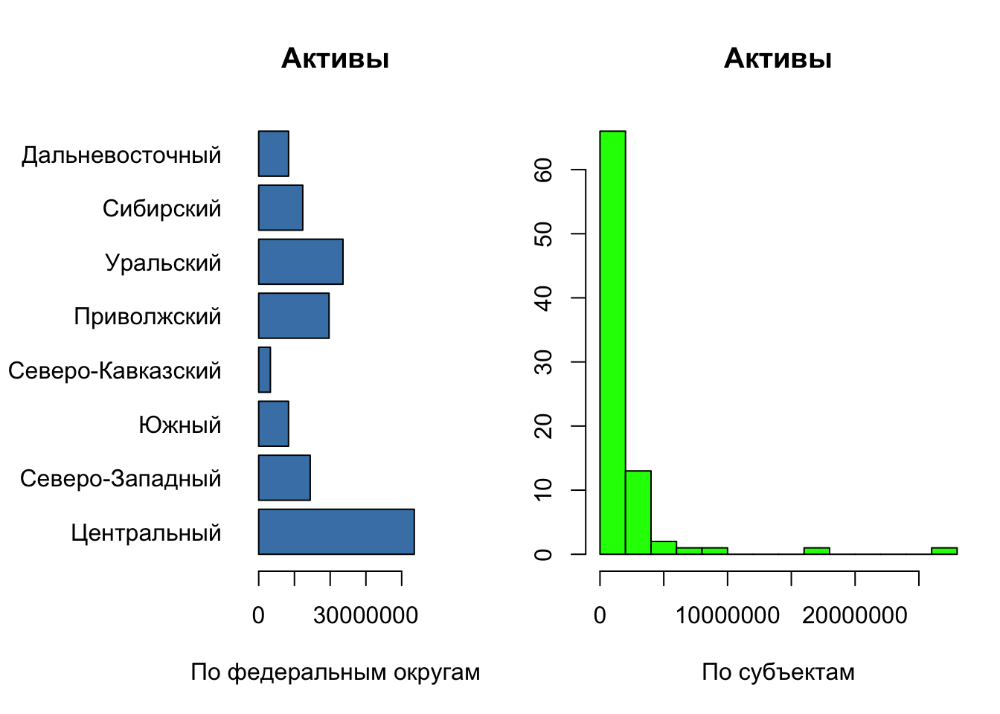
4.2 Условия
Проверка условий позволяет осуществлять так называемое ветвление в программе. Ветвление означает, что при определенных условиях (значениях переменных) будет выполнен один программный код, а при других условиях — другой. В R для проверки условий используется условный оператор if — else if — else следующего вида:
if (condition) {
statement1
} else if (condition) {
statement2
} else {
statement3
}Сначала проверяется условие в выражении if (condition), и если оно истинно, то выполнится вложенный в фигурные скобки программный код statement1, после чего оставшиеся условия не будут проверяться. Если первое условие ложно, программа перейдет к проверке следующего условия else if (condition). Далее, если оно истинно, то выполнится вложенный код statement2, если нет — проверка переключится на следующее условие и так далее. Заключительный код statement3, следующий за словом else, выполнится только если ложными окажутся все предыдущие условия.
Конструкций
else ifможет быть произвольное количество, конструкцииifиelseмогут встречаться в условном операторе только один раз, в начале и конце соответственно. При этом условный оператор может состоять только из конструкцииif, аelse ifиelseне являются обязательными.
Например, используя вышеприведенный код с вычислением экспоненты и факториала, можно вывести на экран информацию о том, больше ли экспонента чем факториал на данной итерации цикла:
## УСЛОВИЯ
for (i in 1:10){
a <- factorial(i) # факториал i
b <- exp(i) # e в степени i
ratio <- a/b # вычисляем отношение экспоненты и факториала
if (ratio < 1){ # если экспонента больше, то...
cat(i,'! < exp(', i, ')\n', sep = '')
} else { # в противном случае
cat(i,'! > exp(', i, ')\n', sep = '')
}
}
## 1! < exp(1)
## 2! < exp(2)
## 3! < exp(3)
## 4! < exp(4)
## 5! < exp(5)
## 6! > exp(6)
## 7! > exp(7)
## 8! > exp(8)
## 9! > exp(9)
## 10! > exp(10)Теперь рассмотрим более практическую задачу. В нашем распоряжении имеются данные по среднеклиматическим (за последние 50 лет) температурам на территории юга Европейской части России с разрешением \(30''\) (около 1 км), полученные с портала WorldClim. Необходимо построить гистограммы распределения температур по месяцам года, раскрасив их в различные цвета соответственно среднему значению температуры:
- Если средняя температура ниже \(0^\circ C\), то цвет гистограммы синий
- Если средняя температура от \(0^\circ C\) до \(10^\circ C\), то цвет гистограммы желтый
- Если средняя температура выше \(10^\circ C\), то цвет гистограммы оранжевый
# ПАКЕТНОЕ ЧТЕНИЕ ДАННЫХ
library(foreign) # для чтения dbf необходима библиотека foreign
files <- list.files("dbf") # прочитаем список файлов в директории dbf
files <- files[grep(".dbf", files, fixed = TRUE)] # отфильтруем файлы с расширением .dbf
names <- sub(".dbf","",files) # получим названия месяцев, избавившись от расширений
i <- 1 # Создадим дополнительно переменную цикла, чтобы выбирать i-е название месяца
for (file in files){ # пройдемся по всем файлам
temp <- read.dbf(paste("dbf/", file, sep='')) # прочитаем текущий файл
tmean <- mean(temp$Temp) # вычислим среднюю температуру из столбца Temp
hist.col <- "white" # иницилизируем переменную цвета за пределами условия
# Проверим наше условие
if (tmean < 0){
hist.col <- "steelblue"
} else if (tmean < 10){
hist.col <- "yellow"
} else {
hist.col <- "orange"
}
# Построим гистограмму
hist(temp$Temp,
col = hist.col,
main = names[i]) # Вот здесь нам нужна дополнительная переменная цикла
# Нанесем линию среднего значения
abline(v = tmean,
lwd = 2,
col = "red")
# Подпишем среднюю температуру
text(tmean,
1000,
labels = round(tmean,1),
pos = 4,
col = "red")
i <- i + 1 # Не забудем сделать инкремент переменной цикла
}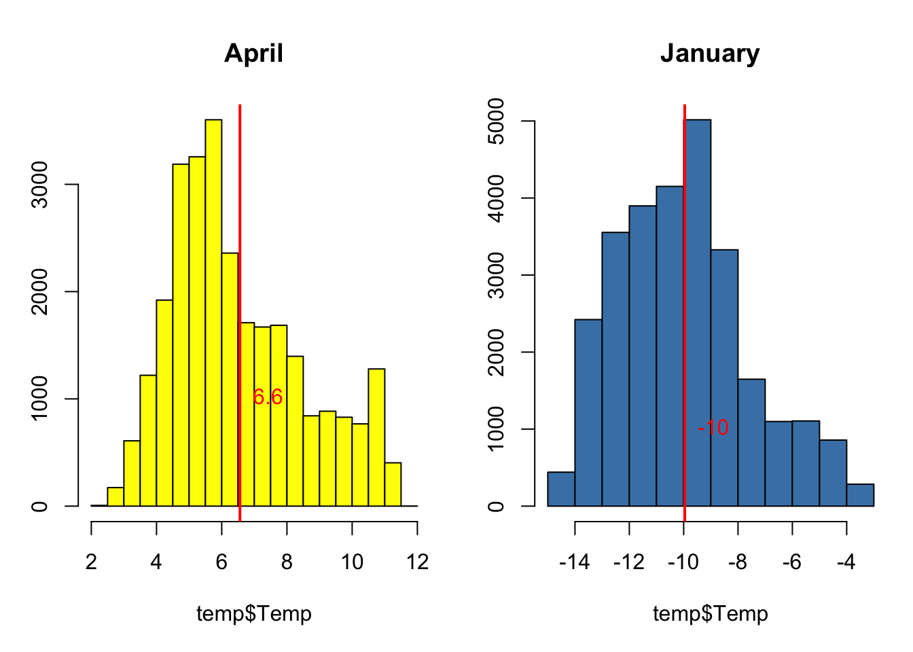
4.3 Функции
Функции в R можно использовать для структурирования кода на логически завершенные, автономные фрагменты кода, каждый из которых выполняет конкретную задачу. Чем сильнее разрастается ваш программный код, тем больше проявляется потребность в наличии функций. Функции позволяют использовать один и тот же код в разных местах программы, не повторяя его.
Синтаксис функции выглядит следующим образом:
functionName <- function(parameter1, parameter2, ...){
...
return(result)
}Функция создается c помощью ключевого слова function, за которым в круглых скобках заключается произвольное количество параметров (столько, сколько вам нужно: от нуля и более). С помощью этих параметров вы сможете передавать внутрь функции значения переменных. Созданной функции необходимо дать имя, используя оператор присвоения <-. После того как выполнится код внутри функции, результат можно вернуть, используя ключевого слово return.
R не поддерживает возврат множественных результатов. Если вам необходимо вернуть несколько объектов (переменных, векторов, таблиц и т.д.), создайте список (list), включите в него все возвращаемые объекты и верните из функции этот список.
В вышеприведенном примере мы использовали проверку условия для того чтобы вычислить рекомендуемый цвет гистограммы. С одной стороны, это некая вспомогательная процедура, не имеющая непосредственного отношения к построению гистограммы. С другой стороны, это полезная процедура, которой мы захотим воспользоваться в дальнейшем — всегда приятно, когда программа тебе с выбором стилей оформления данных2.
Оформим выбор цвета в виде функции, которая принимает в каестве параметра число (температуру), а возвращает название цвета.
## ФУНКЦИИ
# Создадим функцию, возвращающую цвет в зависимости от температуры
selectColor <- function(value) {
hist.col <- "white"
if (tmean < 0){
hist.col <- "steelblue"
} else if (tmean < 10){
hist.col <- "yellow"
} else {
hist.col <- "orange"
}
return(hist.col)
}
i <- 1
par(mfrow = c(2,2))
for (file in files) {
temp <- read.dbf(file)
tmean <- mean(temp$Temp)
# выберем цвет с помощью нашей функции
hist.col <- selectColor(tmean)
# построим гистограмму
hist(temp$Temp,
col = hist.col,
main = names[i])
# добавим линию среднего
abline(v = tmean,
lwd = 2,
col = "red")
# подпишем среднее
text(tmean,
1000,
labels = round(tmean,1),
pos = 4,
col = "red")
i <- i+1
}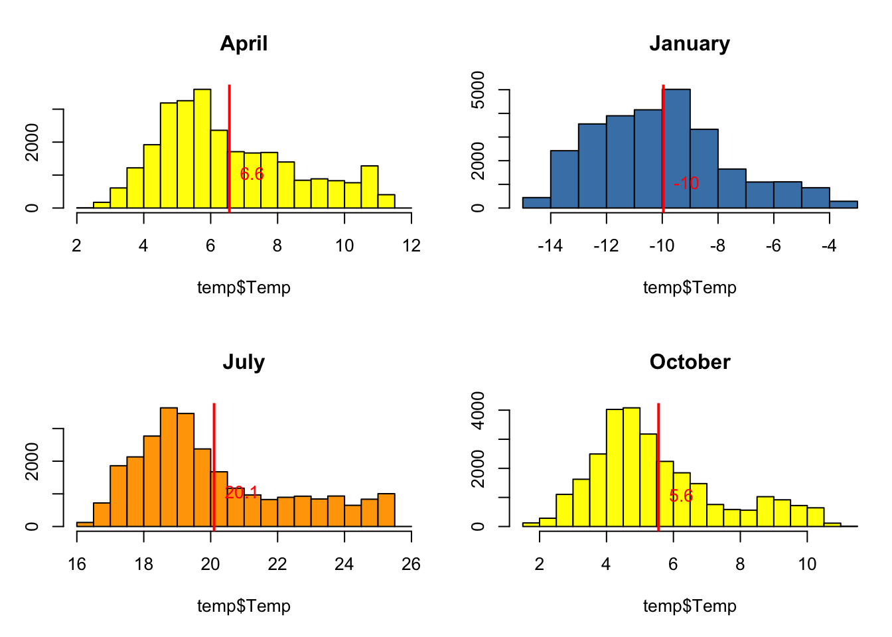
Усложним задачу, чтобы показать, как работать с несколькими аргументами функции. Например, мы хотим не одноцветные диаграммы, а чтобы цвет менялся плавным градиентом от первого столбика гистограммы до последнего. Соответственно, количество возвращаемых цветов должно быть равно количеству столбиков в гистограмме. Нашей функции не важно, столбики это или нет, но ей надо знать, сколько цветов надо вернуть. Для этого добавим в нее второй параметр ncolors. Это позволит пользователю при желании не задвать этот параметр, если необходим только один цвет.
# ГИСТОГРАММЫ С ГРАДИЕНТОМ
selectColor2 <- function(value, ncolors){ # передаем в качестве дополнительного параметра количество цветов
hist.col <- "white"
# генерируем ncolors цветов из соответствующей палитры
if (tmean < 0){
hist.col <- colorRampPalette(c("darkslateblue", "steelblue1"))(ncolors)
} else if (tmean < 10){
hist.col <- colorRampPalette(c("steelblue1", "yellow"))(ncolors)
} else {
hist.col <- colorRampPalette(c("yellow", "red"))(ncolors)
}
return(hist.col)
}
i <- 1
par(mfrow = c(2,2))
ncells <- 25 # установим фиксированное количество столбцов гистограммы
for (file in files){
temp <- read.dbf(file)
tmean <- mean(temp$Temp)
# получим для раскраски требуемое количество цветов
hist.col <- selectColor2(tmean, ncells)
# построим гистограмму
hist(temp$Temp,
col = hist.col,
main = names[i],
breaks = ncells)
# добавим линию среднего
abline(v = tmean,
lwd = 2,
col = "red")
# подпишем среднее
text(tmean, 1000,
labels = round(tmean,1),
pos = 4,
col = "red")
i <- i+1
}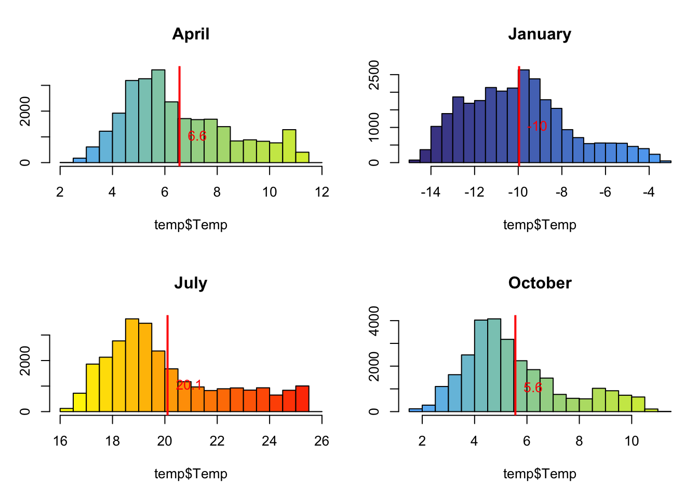
4.4 Векторизованые вычисления
Данные (в том числе географические) практически всегда носят множественный характер и организованы в определенные структуры (см. главу 2). Эта особенность данных выдвигает логичное желание иметь процедуры, которые можно применять к полному набору данных, а не к его отдельным компонентам. Это и есть процедуры векторизованных высчислений.
Предположим, вам необходимо что-то вычислить для каждой строки таблицы, при этом порядок вычисления зависит от содержимого ячеек данной строки. Вы можете организовать подобные вычисления с помощью циклов, однако в R существуют специальные функции семейста apply, которые позволяют решать подобные задачи более элегантно и с высокой скоростью. Это достигается за счет того, что функции apply написаны на языке C (как и многие другие функции R), в то время как при организации цикла ваши данные будут обрабатываться стандартными средствами языка.
| Функция | Назначение |
|---|---|
apply() |
применить функцию ко всем строкам или столбцам матрицы |
lapply() |
применить функцию к каждому компоненту вектора или списка и получить результат также в виде списка (l — list) |
sapply() |
применить функцию к каждому компоненту вектора или списка и получить результат в виде вектора (s — simplify) |
vapply() |
аналогична vapply, но требует явного задания типа данных возвращаемого вектора, за счет чего работает быстрее (v — velocity) |
mapply() |
применить функцию к каждому компоненту нескольких векторов или списков и вернуть результат в виде списка (m — multivariate) |
rapply() |
применить функцию рекурсивно ко всем элементам переданного списка и вернуть результат в аналогичной структур (r — recursive) |
tapply() |
применить функцию ко всем компонентам вектора или списка, сгруппировав их по значению переданного фактора |
Функции семейства
apply, принимающие на вход списки, могут работать и с фреймами данных. В этом случае фрейм внутри функции будет преобразован с помощью функцииas.list()в список, элементами которого являются столбцы (переменные) входного фрейма данных. Данные при этом не потеряются, их типы тоже не изменятся.
Базовая функция apply() имеет следующие аргументы:
X— массив любой размерности (включая вектор)MARGIN— измерения по которым необходимо вести вычисления. Для матрицы1означает строку,2означает столбец,c(1, 2)будет означать, что вычисления производятся по всем комбинациям строк и столбцовFUN— функция, которая будет применяться к каждому элементу указанных измерений
Рассмотрим, как можно вычислять значения по строкам. У нас есть подготовленная таблица Росстата Выбросы в атмосферу загрязняющих веществ, отходящих от стационарных источников, по видам экономической деятельности. Рассчитаем, какой тип источника занимает максимальное и минимальное место среди газообразных и жидких. Обратите внимание, что в первом случае используется заранее созданнаф функция, а во втором мы определяем анонимную функцию непосредственно при вызове apply():
## ВЕКТОРИЗОВАННЫЕ ВЫЧИСЛЕНИЯ
library(dplyr)
##
## Присоединяю пакет: 'dplyr'
## Следующие объекты скрыты от 'package:stats':
##
## filter, lag
## Следующие объекты скрыты от 'package:base':
##
## intersect, setdiff, setequal, union
df <- read.csv2("atm_emissions.csv")
head(df)
## YEAR TOTAL SOLID FLGAS SO NO CO CH ORG
## 1 1992 28207.6 5609.1 22598.5 8171.3 2718.1 6813.0 2583.9 1608.9
## 2 1993 24788.3 4746.1 20042.2 7217.9 2462.0 5894.0 2386.7 1604.8
## 3 1994 21929.1 3870.2 18058.9 6512.5 2085.2 5140.8 2609.3 1238.0
## 4 1995 21269.6 3600.4 17669.2 6424.8 1996.6 5005.6 2735.7 1110.9
## 5 1996 20274.1 3233.4 17040.8 6156.7 1920.4 4876.6 2531.3 1161.8
## 6 1997 19332.9 3041.8 16291.1 5991.1 1799.7 4653.0 2554.2 989.9
find.max <- function(x) {
return(names(x)[which.max(x)])
}
df$MAXSRC <- apply(df[5:9], 1, find.max)
df$MINSRC <- apply(df[5:9], 1, function(x) names(x)[which.min(x)])
print(df)
## YEAR TOTAL SOLID FLGAS SO NO CO CH ORG MAXSRC
## 1 1992 28207.6 5609.1 22598.5 8171.3 2718.1 6813.0 2583.9 1608.9 SO
## 2 1993 24788.3 4746.1 20042.2 7217.9 2462.0 5894.0 2386.7 1604.8 SO
## 3 1994 21929.1 3870.2 18058.9 6512.5 2085.2 5140.8 2609.3 1238.0 SO
## 4 1995 21269.6 3600.4 17669.2 6424.8 1996.6 5005.6 2735.7 1110.9 SO
## 5 1996 20274.1 3233.4 17040.8 6156.7 1920.4 4876.6 2531.3 1161.8 SO
## 6 1997 19332.9 3041.8 16291.1 5991.1 1799.7 4653.0 2554.2 989.9 SO
## 7 1998 18661.8 2864.4 15797.4 5679.3 1753.3 4562.9 2571.6 921.9 SO
## 8 1999 18539.7 2768.4 15771.2 5505.5 1716.4 4663.9 2767.7 831.0 SO
## 9 2000 18819.8 2972.2 15847.6 5407.1 1698.4 4997.9 2685.4 850.4 SO
## 10 2001 19123.6 2973.2 16150.4 5254.0 1678.9 5148.1 2723.6 1130.8 SO
## 11 2002 19481.2 2882.8 16598.4 4987.4 1646.2 5857.5 2733.2 1164.8 CO
## 12 2003 19829.4 2868.0 16961.4 4959.6 1661.8 5929.4 2834.1 1356.5 CO
## 13 2004 20491.3 2855.7 17635.6 4768.4 1628.9 6774.4 2786.8 1448.2 CO
## 14 2005 20425.4 2802.0 17623.3 4675.0 1666.8 6521.2 2868.1 1650.6 CO
## 15 2006 20568.4 2842.8 17725.6 4764.7 1703.1 6338.3 2815.0 1863.1 CO
## 16 2007 20636.9 2743.4 17893.5 4573.1 1732.8 6448.4 2992.4 1908.6 CO
## 17 2008 20103.3 2704.2 17399.0 4534.1 1816.6 6091.5 3217.5 1532.0 CO
## 18 2009 19021.2 2341.1 16680.1 4370.6 1730.5 5500.5 3347.3 1546.0 CO
## 19 2010 19115.6 2381.2 16734.4 4385.3 1855.2 5565.1 3135.9 1605.3 CO
## 20 2011 19162.3 2283.1 16879.2 4342.7 1880.0 5753.5 3105.8 1622.8 CO
## 21 2012 19630.3 2249.4 17380.9 4340.9 1937.5 6001.8 3293.3 1638.2 CO
## 22 2013 18446.5 2008.5 16438.0 4173.3 1874.2 5350.9 3424.8 1455.8 CO
## 23 2014 17451.9 1922.2 15529.7 4036.3 1805.5 4938.4 3251.0 1340.0 CO
## 24 2015 17295.7 1820.4 15475.3 4099.4 1787.4 4799.6 3323.0 1294.5 CO
## 25 2016 17349.3 1723.9 15625.4 4011.4 1830.1 4907.1 3406.1 1304.6 CO
## MINSRC
## 1 ORG
## 2 ORG
## 3 ORG
## 4 ORG
## 5 ORG
## 6 ORG
## 7 ORG
## 8 ORG
## 9 ORG
## 10 ORG
## 11 ORG
## 12 ORG
## 13 ORG
## 14 ORG
## 15 NO
## 16 NO
## 17 ORG
## 18 ORG
## 19 ORG
## 20 ORG
## 21 ORG
## 22 ORG
## 23 ORG
## 24 ORG
## 25 ORGДругие функции семейства apply в приложении к фреймам данных будут работать со столбцами (переменными), интерпретируя их как элементы списка. Наиболее часто из них используются lapply(), sapply() и vapply().В отличие от apply(), они уже не принимаеют номера измерений и работают только с элементами переданного списка. Например, мы можем посчитать среднее значение экономического показателя по каждой переменной в таблице округов. Поскольку функция среднего уже есть в составе базовых средств R, достаточно указать ее при вызове sapply():
sapply(okr, mean)
## Warning in mean.default(X[[i]], ...): аргумент не является числовым или
## логическим: возвращаю NA
## Регион Площадь Население Трудящиеся Доход
## NA 2137.287 17958.362 8487.625 25077.125
## Расходы Зарплата ВРП Активы
## 18338.375 28976.375 6239994.875 16690191.375В данном случае для первого столбца было возвращено значение NA, что логично, поскольку он имеет строковый тип.
В качестве альтернативы функциям apply можно также воспользоваться вычислениями посредством функций семейства map из пакета purrr (еще один пакет из tidyverse). Эти функции работают аналогично lapply() и поддерживают последовательности с помощью пайп-оператора:
map()возвращает список.map_lgl()возвращает вектор логических значений.map_int()возвращает вектор целочисленных значений.map_dbl()возвращает вектор чисел с плавающей точкой.map_chr()возвращает вектор строк.
Например, предыдущая задача с помощью purrr решались бы так:
library(purrr)
map_dbl(okr, mean)
## Warning in mean.default(.x[[i]], ...): аргумент не является числовым или
## логическим: возвращаю NA
## Регион Площадь Население Трудящиеся Доход
## NA 2137.287 17958.362 8487.625 25077.125
## Расходы Зарплата ВРП Активы
## 18338.375 28976.375 6239994.875 16690191.3754.5 Контрольные вопросы и задачи
- Что такое цикл и для каких сценариев обработки данных могут быть полезны циклы?
- Перечислите несколько способов организации циклов в R, необходимые ключевые слова и параметры.
- Что такое инкремент и декремент?
- Какое ключевое слово позволяет прервать цикл и выйти из него принудительно?
- Какое ключевое слово позволяет прекратить текущую итерацию цикла и перейти сразу к новой итерации?
- Являются ли необходимыми фигурные скобки в случае когда цикл или условный оператор содержит только одно выражение? Что говорит об этом стиль программирования на R?
- Что такое условный оператор и для каких сценариев обработки данных необходимы условные операторы?
- Перечислите ключевые слова, которые могут быть использованы для организации условных операторов
- Что такое функция и для каких сценариев обработки данных могут быть полезны функции?
- Может ли функция возвращать более одного значения? Что необходимо сделать, чтобы реализовать такую возможность?
- Что такое векторизованные вычисления?
- Перечислите функции семейства
applyи задачи, которые они позволяют решить. - Какая функция семейства
applyпозволяет выполнять вычисления не только по столбцам, но и по строкам? - Можно ли передавать в функции семейства
applyфреймы данных? Если да, то как интерпретируются такие данные? - Какой пакет R позволяет выполнять векторизованные вычисления в более простой и быстрой форме, чем функции семейства
apply? Можно ли с помощью него выполнять вычисления по строкам?
4.5.1 Вопросы
4.5.2 Задачи
| Самсонов Т.Е. Визуализация и анализ географических данных на языке R. М.: Географический факультет МГУ, 2017. DOI: 10.5281/zenodo.901911 |
в картографии это называется “smart mapping”, что переводят как “умное картографирование”, хотя это и не самый удачный вариант перевода↩